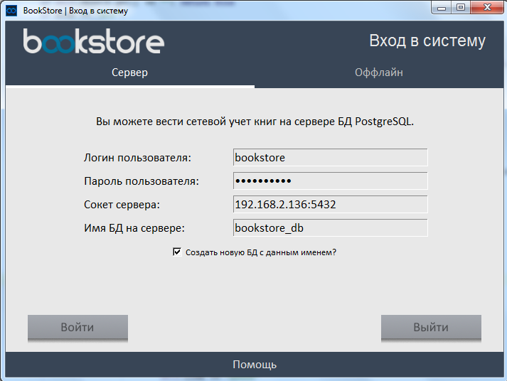

Для того, чтобы использовать оффлайн режим, Вам не нужно подключение к серверам, Вам достаточно выбрать вкладку "Оффлайн" в окне входа и нажать «Войти».
- Поставьте PostgreSQL на тот компьютер, на котором Вы планируете размещать Ваш сервер данных. Такой компьютер должен находиться в той же локальной сети (например, подключение по Wi-Fi) что и компьютеры пользователей базы.
Вы можете не делать этого, если таковой сервер у Вас уже есть. Скачать установщик PostgreSQL можно по ссылке. - Настройте Ваш PostgreSQL сервер так, чтобы он слушал запросы на том локальном IP-адресе, который будет доступен пользователям базы. О том, как это сделать, читайте здесь.
- Зайдите в BookStore с одного из компьютеров, которые могут подключаться к серверу. В поля ввода введите логин, пароль пользователя Вашего сервера PostgreSQL и сокет ("address:port") Вашего серевера. В поле имени базы данных укажите то имя базы данных, которым Вы хотели бы назвать Вашу БД BookStore на Вашем сервере.
После этого нажмите галочку «Создать новую БД с данным именем?» и нажмите «Войти». Если Вы все сделали правильно, BookStore создат новую базу данных на указанном сервере PostgreSQL и зайдет на нее. - Теперь Вы можете заходить на Ваш сервер PostgreSQL через BookStore с любого доступного серверу компьютера. Для этого Вам лишь достаточно ввести все 4 поля ввода при входе и нажимать галочку «Создать новую БД с данным именем?» уже будет не нужно.